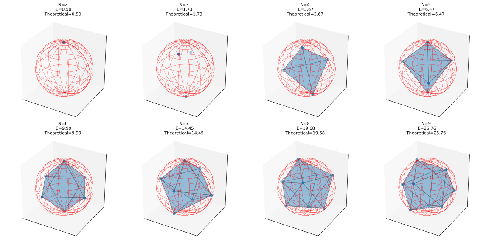

|
Home | Libraries | People | FAQ | More |


#include <boost/math/optimization/gradient_descent.hpp> template<typename ArgumentContainer, typename RealType, class Objective, class InitializationPolicy, class ObjectiveEvalPolicy, class GradEvalPolicy> class gradient_descent { public: void step(); } /* Convenience overloads */ /* make gradient descent by providing ** objective function ** variables to optimize over ** optionally learing rate * * requires that code is written using boost::math::differentiation::rvar */ template<class Objective, typename ArgumentContainer, typename RealType> auto make_gradient_descent(Objective&& obj, ArgumentContainer& x, RealType lr = RealType{ 0.01 }); /* make gradient descent by providing * objective function ** variables to optimize over ** learning rate (not optional) ** initialization policy * * requires that code is written using boost::math::differentiation::rvar */ template<class Objective, typename ArgumentContainer, typename RealType, class InitializationPolicy> auto make_gradient_descent(Objective&& obj, ArgumentContainer& x, RealType lr, InitializationPolicy&& ip); /* make gradient descent by providing ** objective function ** variables to optimize over ** learning rate (not optional) ** variable initialization policy ** objective evaluation policy ** gradient evaluation policy * * code does not have to use boost::math::differentiation::rvar */ template<typename ArgumentContainer, typename RealType, class Objective, class InitializationPolicy, class ObjectiveEvalPolicy, class GradEvalPolicy> auto make_gradient_descent(Objective&& obj, ArgumentContainer& x, RealType& lr, InitializationPolicy&& ip, ObjectiveEvalPolicy&& oep, GradEvalPolicy&& gep)
Gradient descent iteratively updates parameters x
in the direction opposite to the gradient of the objective function (minimizing
the objective).
x[i] -= lr * g[i]
where lr is a user defined
learning rate. For a more complete decription of the theoretical principle
check the wikipedia
page
The implementation delegates: - the initialization of differentiable variables to an initialization policy - objective evaluation to an objective evaluation policy - the gradient computation to a gradient evaluation policy - the parameter updates to an update policy
The interface is intended to be pytorch-like, where a optimizer object is
constructed and progressed with a step() method. A helper minimize
method is also provided.
Objective&&
obj : objective funciton to
minimize
ArgumentContainer&
x : variables to optimize over
RealType&
lr : learning rate. A larger
value takes larger steps during descent, leading to faster, but more
unstable convergence. Conversely, small vaues are more stable but take
longer to converge.
InitializationPolicy&& ip
: Initialization policy for ArgumentContainer,
or the initial guess. By default it is set to tape_initializer_rvar<RealType> which lets the user provide the "initial
guess" by setting the values of x
manually. For more info check the Policies section.
ObjectiveEvalPolicy&&
oep : tells the optimizer how
to evaluate the objective function. By default reverse_mode_function_eval_policy<RealType>.
GradEvalPolicy&&
gep : tells the optimzier how
to evaluate the gradient of the objective function. By default reverse_mode_gradient_evaluation_policy<RealType>
In this section we will present an example for finding optimal configurations
of electrically charged particles confined to a R
= 1
sphere. This problem is also known as the Thomson
problem. In summary, we are looking for the configuration of an N-electron
system subject to the Coulomb potential confined to the $S^2$ sphere. The
Coulomb potential is given by:
The code below manually minimizes the abover potential energy function for N particles over their two angular pozitions.
#include <boost/math/differentiation/autodiff_reverse.hpp> #include <boost/math/optimization/gradient_descent.hpp> #include <boost/math/optimization/minimizer.hpp> #include <cmath> #include <fstream> #include <iostream> #include <random> #include <string> namespace rdiff = boost::math::differentiation::reverse_mode; namespace bopt = boost::math::optimization; double random_double(double min = 0.0, double max = 1.0) { static thread_local std::mt19937 rng{std::random_device{}()}; std::uniform_real_distribution<double> dist(min, max); return dist(rng); } template<typename S> struct vec3 { /** * @brief R^3 coordinates of particle on Thomson Sphere */ S x, y, z; }; template<class S> static inline vec3<S> sph_to_xyz(const S& theta, const S& phi) { /** * convenience overload to convert from [theta,phi] -> x, y, z */ return {sin(theta) * cos(phi), sin(theta) * sin(phi), cos(theta)}; } template<typename T> T thomson_energy(std::vector<T>& r) { const size_t N = r.size() / 2; const T tiny = T(1e-12); T E = 0; for (size_t i = 0; i < N; ++i) { const T& theta_i = r[2 * i + 0]; const T& phi_i = r[2 * i + 1]; auto ri = sph_to_xyz(theta_i, phi_i); for (size_t j = i + 1; j < N; ++j) { const T& theta_j = r[2 * j + 0]; const T& phi_j = r[2 * j + 1]; auto rj = sph_to_xyz(theta_j, phi_j); T dx = ri.x - rj.x; T dy = ri.y - rj.y; T dz = ri.z - rj.z; T d2 = dx * dx + dy * dy + dz * dz + tiny; E += 1.0 / sqrt(d2); } } return E; } template<class T> std::vector<rdiff::rvar<T, 1>> init_theta_phi_uniform(size_t N, unsigned seed = 12345) { const T pi = T(3.1415926535897932384626433832795); std::mt19937 rng(seed); std::uniform_real_distribution<T> unif01(T(0), T(1)); std::uniform_real_distribution<T> unifm11(T(-1), T(1)); std::vector<rdiff::rvar<T, 1>> u; u.reserve(2 * N); for (size_t i = 0; i < N; ++i) { T z = unifm11(rng); T phi = (T(2) * pi) * unif01(rng) - pi; T theta = std::acos(z); u.emplace_back(theta); u.emplace_back(phi); } return u; } int main(int argc, char* argv[]) { if (argc != 2) { std::cerr << "Usage: " << argv[0] << " <N>\n"; return 1; } const int N = std::stoi(argv[1]); const int NSTEPS = 100000; const double lr = 1e-3; auto u_ad = init_theta_phi_uniform<double>(N); auto gdopt = bopt::make_gradient_descent(&thomson_energy<rdiff::rvar<double, 1>>, u_ad, lr); // filenames std::string pos_filename = "thomson_" + std::to_string(N) + ".csv"; std::string energy_filename = "energy_" + std::to_string(N) + ".csv"; std::ofstream pos_out(pos_filename); std::ofstream energy_out(energy_filename); pos_out << "step,particle,x,y,z\n"; energy_out << "step,energy\n"; for (int step = 0; step < NSTEPS; ++step) { gdopt.step(); for (int pi = 0; pi < N; ++pi) { double theta = u_ad[2 * pi + 0].item(); double phi = u_ad[2 * pi + 1].item(); auto r = sph_to_xyz(theta, phi); pos_out << step << "," << pi << "," << r.x << "," << r.y << "," << r.z << "\n"; } auto E = gdopt.objective_value(); energy_out << step << "," << E << "\n"; } pos_out.close(); energy_out.close(); return 0; }
The variable
const int N = std::stoi(argv[1]);
is the number of particles read from the command line
const int NSTEPS = 100000;
is the number of optimization steps
const double lr = 1e-3;
is the optimizer learning rate. Using the code the way its written, the optimizer runs for 100000 steps. Running tthe program with
./thomson_sphere N
optimizes the N particle system. Below is a plot of several optimal configurations for N=2,...8 particles.

Below is a plot of the final energy of the system, and its deviation from the theoretically predicted values. The table of theorical energy values for the problem is from wikipedia.
[gbo_graphi thomson_energy_error_gradient_descent.svg]
Often, we don't want to actually implement our own stepping function, i.e. we care about certain convergence criteria. In the above example, we need to include the minimier.hpp header:
#include <boost/math/optimization/minimizer.hpp>
and replace the optimization loop:
for (int step = 0; step < NSTEPS; ++step) { gdopt.step(); for (int pi = 0; pi < N; ++pi) { double theta = u_ad[2 * pi + 0].item(); double phi = u_ad[2 * pi + 1].item(); auto r = sph_to_xyz(theta, phi); pos_out << step << "," << pi << "," << r.x << "," << r.y << "," << r.z << "\n"; } auto E = gdopt.objective_value(); energy_out << step << "," << E << "\n"; }
with
auto result = minimize(gdopt);
minimize returns a
optimization_result<typename Optimizer::real_type_t>
, a struct with the following fields:
size_t num_iter; RealType objective_value; std::vector<RealType> objective_history; bool converged;
where num_iter is the number
of iterations the optimizer went through, objective_value
is the final objective value, objective_history
are the intermediate objective values, and converged
is whether the convergence criterion was satisfied. By default, minimize(optimizer)
uses a gradient norm convergence criterion. If norm(gradient_vector) <
1e-3, the criterion is satisfied. Maximum number of iterations is set at
100000. For more info on how to use minimize
check the minimize docs. With default parameters, gradient descent solves
the N=2 problem in 93799
steps.